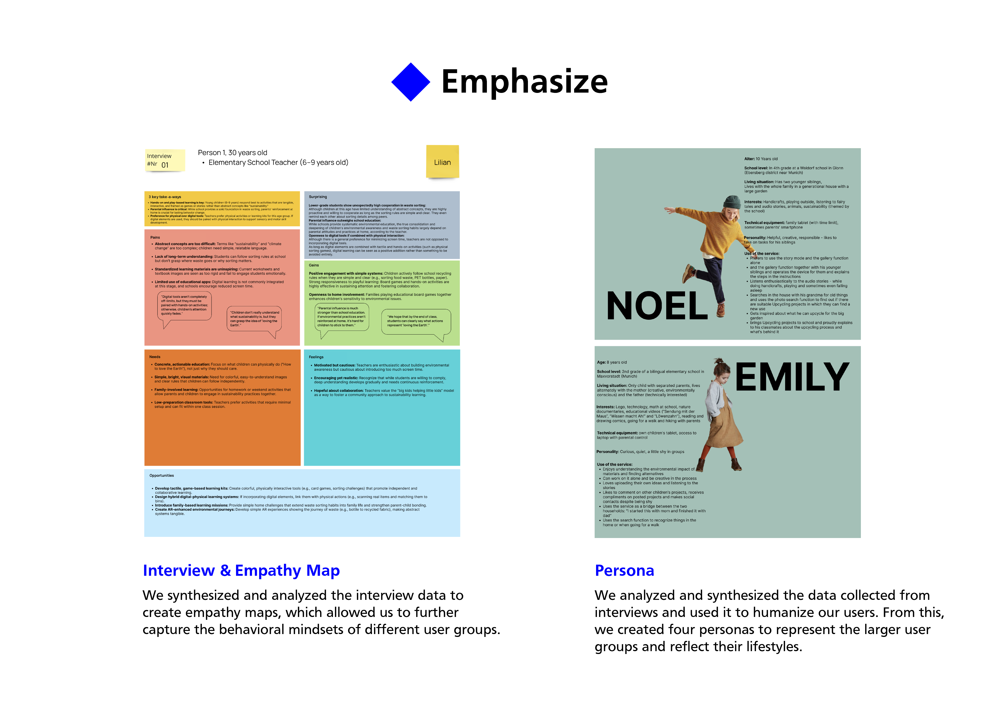
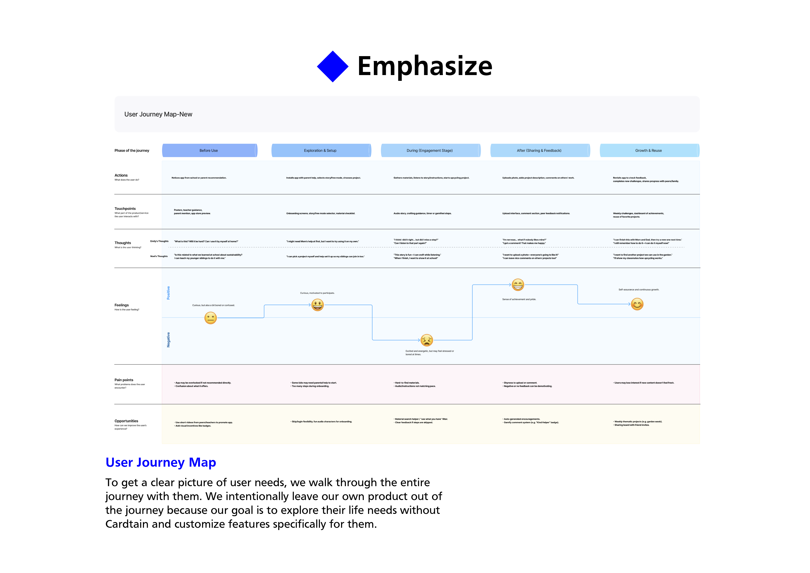
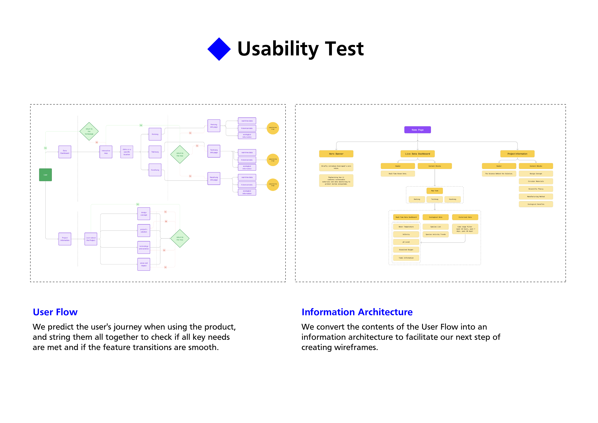
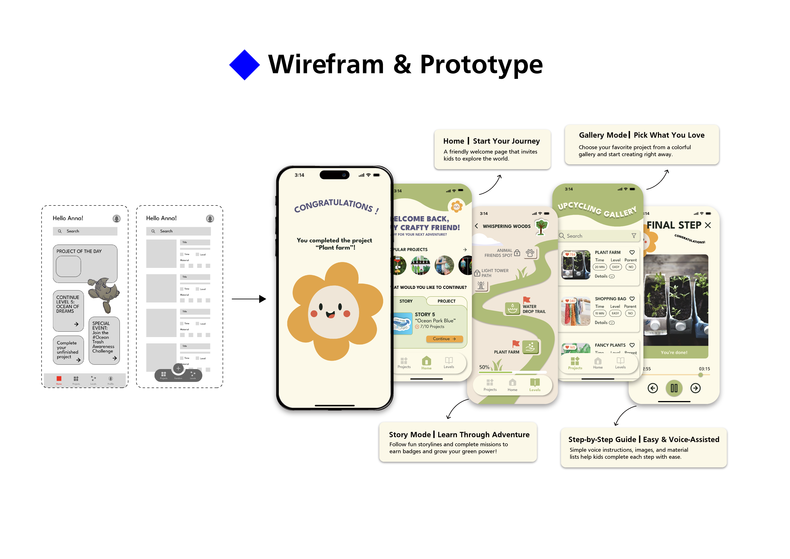

Trash To Treasure
A circular-economy companion for kids — stories, gardens, and step-by-step guides that turn yesterday's waste into today's wonder.
Overview
A team project from the Circular Experience Design course at HM Munich. We asked a quiet question: what would circularity feel like if it were first learned at six years old, through play, instead of at twenty-six through guilt? Our answer was a kids' app where every craft begins with something a family was about to throw away.
Why kids? Why now?
Interviews with children aged 5–12 showed that they fully understood what recycling was — but had almost no mental model of why the materials around them were worth recycling. Adults often skipped the "why" because the action itself felt obvious. That's exactly the gap we wanted to close.
So the product doesn't nag. It tells stories, hands you a flower, and asks what you'd like to build next.


Story mode, not score mode.
The app opens with a "Crafty Friend" — a plant-like character whose garden grows as a child completes upcycling missions with materials from home. Each mission is a mini narrative with a step-by-step, voice-assisted guide for kids who can't yet read comfortably.
A shared gallery lets siblings, classmates, and parents see each other's creations without the competition pattern typical of streaks and points.


Small hands, circular habits.
Co-designed and tested with four small users across the course, Trash To Treasure was our way of arguing that sustainability education deserves the same playful craft we give premium consumer products. It's still one of my favorite team projects — an exercise in designing for a generation we rarely ask for feedback.